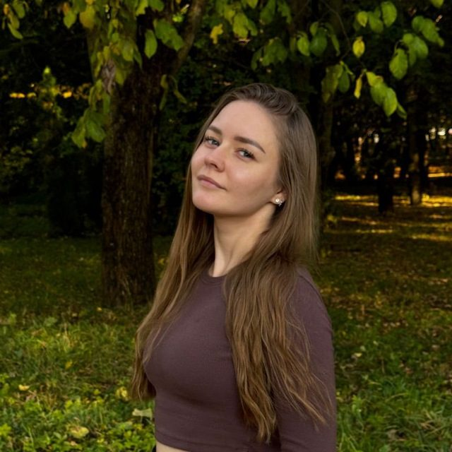
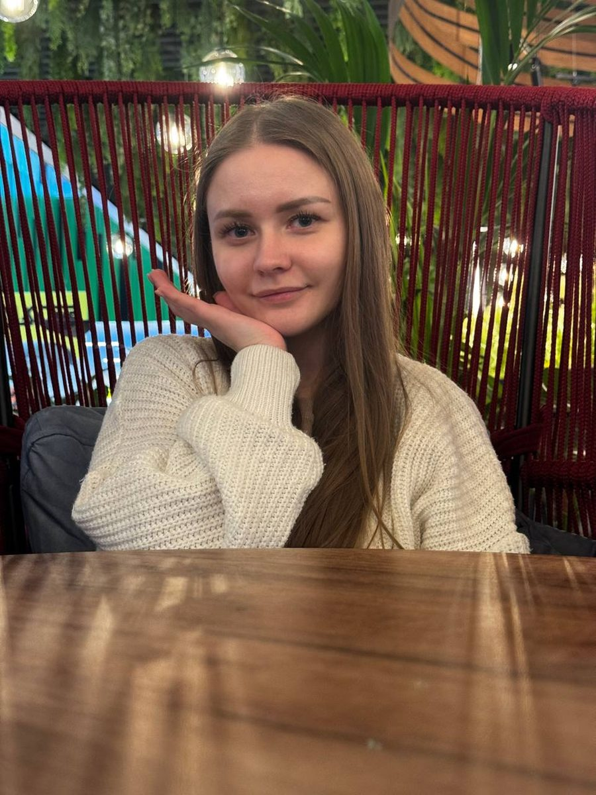

Помогу найти опору, когда жизнь резко изменилась
Я специализируюсь на кризисной психологии.
Помогаю пережить острый период: утрату, расставание, потрясение.
Вместе мы разберёмся, что происходит, и шаг за шагом восстановим опору.
Онлайн и очно в Минске. Общение на русском языке.

С чем можно прийти
Кризис — это момент, когда прежние способы справляться перестают работать.
Выберите тему, чтобы узнать подробнее.
Если вашей ситуации нет в списке, напишите мне.
Вместе мы решим, подойдёт ли вам такой формат работы.
Как проходит работа
Знать заранее, что будет дальше, уже снижает тревогу.
Вы заполняете короткую анкету
Укажите имя, возраст и две-три фразы о том, что случилось.
Текст автоматически появится в сообщении в Telegram.
Вы сами решаете, отправлять его или нет.
Первая встреча
Мы познакомимся, и я внимательно вас выслушаю.
Я уточню, чем могу быть полезна.
Затем мы вместе решим, продолжать ли работу.
Стабилизация
Мы будем возвращать сон, спокойное дыхание и ощущение опоры.
Найдём то, что помогает именно вам.
Следующие шаги
Мы решим, достаточно ли нескольких встреч.
Если вам понадобится врач или другой специалист, я скажу об этом прямо.
Стоимость обсуждается в личных сообщениях.
Аренда кабинета для очных встреч оплачивается отдельно.

Обо мне
Меня зовут Виктория Чемезо.
Я обучаюсь в Институте психологии БГПУ им. М. Танка в Минске и специализируюсь на кризисной психологии.
Работаю с запросами, связанными с утратой, расставанием, острым стрессом и тревогой.
Моя задача — помочь вам стабилизировать состояние и найти опору.
Если потребуется другая помощь, подскажу, к кому обратиться.
- ФорматОнлайн и очно в Минске.Возможен выезд в другой город.
- КонфиденциальностьВсё, что вы рассказываете, остаётся между нами.Исключение — прямая угроза жизни.
- Границы работыЯ не гарантирую результат, не ставлю диагнозы и не назначаю лекарства.
Что делать, если вам плохо прямо сейчас?
Я консультирую по записи и не заменяю экстренные службы.
Если есть угроза жизни, звоните сразу.
- 112Единая служба спасения
- 103Скорая помощь
- 133Экстренная психологическая помощь, круглосуточно
- +375 17 352-44-44Телефон доверия, Минск, для взрослых
- 8 801 100-16-11Телефон доверия для детей и подростков
Замедлить дыхание
Выберите, что вам сейчас нужно, и дышите вместе с кругом.
Готовы начать?
Если дыхание не помогает
Это нормально: такие упражнения помогают не всем и не всегда с первого раза.
Если от счёта вам становится тревожнее, остановитесь и дышите свободно, как привыкли.
Если закружилась голова или онемели пальцы, остановитесь и сделайте несколько обычных вдохов и выдохов.
Попробуйте другое упражнение: «Опора в теле». Оно работает через ощущения, а не через дыхание.
Если состояние не улучшается или вам кажется, что вы в опасности, позвоните по одному из телефонов экстренной помощи в этом разделе.
Упражнение «Опора в теле»
Это упражнение относится к техникам заземления.
Такие техники помогают вернуть внимание в настоящий момент через ощущения в теле.
- Займите удобное положение
Сядьте на стул и поставьте стопы на пол.
Почувствуйте, как стул поддерживает вас, а пол — ваши стопы.
- Подключите руки
Положите ладони на бёдра.
Правой рукой медленно поглаживайте бедро.
Левой рукой мягко постукивайте пальцами по другому бедру.
- Дышите ровно
Дышите спокойно и плавно.
Пусть выдох будет чуть длиннее вдоха.
- Замечайте ощущения
Прислушайтесь к тому, что вы чувствуете: тепло ладоней, ткань одежды, твёрдость стула, давление стоп на пол.
Можно мысленно называть эти ощущения.
- Возвращайте внимание
Если мысли уводят вас в сторону, это нормально.
Мягко вернитесь к ощущениям в теле, без упрёков в свой адрес.
- Завершите упражнение
Продолжайте три–пять минут.
Затем остановитесь и отметьте, что изменилось.
Если упражнение усиливает тревогу или тяжёлые воспоминания, остановитесь и вернитесь к спокойному дыханию.
Часто задаваемые вопросы
Чем кризисный психолог отличается от обычного?
Кризисная помощь короче по срокам и сосредоточена на вашем нынешнем состоянии.
Её цель — помочь пережить острый период и восстановить опору.
Глубокое исследование причин и многолетняя терапия — это другой формат работы.
Сколько встреч понадобится?
Это зависит от ситуации.
Иногда хватает нескольких встреч, иногда нужна более длительная поддержка.
После первой встречи я расскажу, что вижу, и мы вместе примем решение.
Онлайн работает так же, как очно?
Для большинства запросов — да.
Для онлайн-встречи понадобятся тихое место, наушники и стабильное интернет-соединение.
Очные встречи проходят в арендованном кабинете в Минске.
Его стоимость оплачивается отдельно.
Сколько это стоит?
Стоимость обсуждается в личных сообщениях в Telegram.
Заполните анкету или напишите мне напрямую.
Вы можете назначить лекарства или поставить диагноз?
Нет.
Я психолог, а не врач.
Если вам понадобится медицинская помощь, я подскажу, куда обратиться.
Можно ли обратиться за консультацией несовершеннолетнему?
Да, это возможно.
Порядок зависит от возраста и определяется Законом Республики Беларусь «Об оказании психологической помощи».
Если ребёнку меньше 14 лет, консультация проводится с согласия одного из родителей или законных представителей.
Если подростку от 14 до 17 лет, он может обратиться самостоятельно.
Если психолог увидит риск суицидальных действий, он обязан сообщить об этом родителям или законным представителям.
В отдельных случаях, предусмотренных законом, например при жестоком обращении или насилии, согласие родителей не требуется.
Если вы записываетесь за ребёнка, укажите в анкете его возраст.
Сайт подскажет, что нужно сделать дальше.
Не нужно справляться в одиночку, чтобы быть сильным